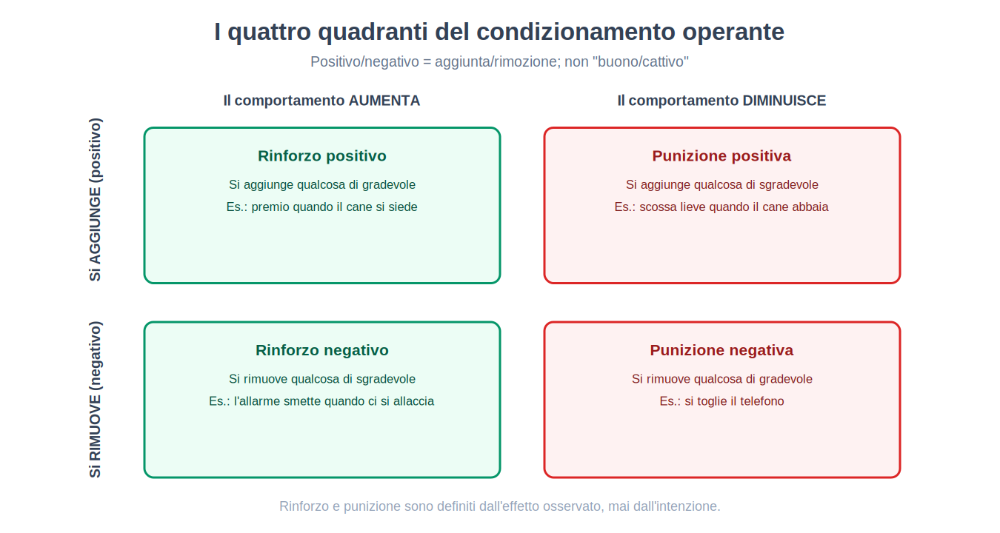
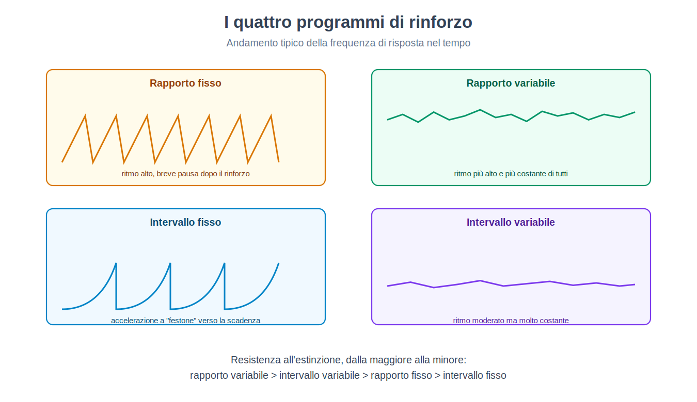

Parte III. La mente come comportamento: il programma comportamentista
Capitolo 14 — Il rifiuto dell'interiorità
[IN DUE PAROLE]
I primi decenni di psicologia sperimentale (capitolo 7) e la tradizione psicoanalitica (Parte II) condividevano, nonostante ogni altra differenza, un presupposto: la mente ha un contenuto interno che vale la pena descrivere, che si tratti di elementi coscienti scomposti da un osservatore addestrato o di conflitti inconsci ricostruiti da un analista. Questo capitolo espone la mossa metodologica opposta: se un contenuto mentale non è osservabile da più di una persona nello stesso modo, non è dato scientifico — è solo comportamento, misurabile, quello che resta.
Immagina di dover giudicare se un cane "abbia fame" senza poterglielo chiedere e senza poter guardare dentro la sua testa. Puoi osservare quanto mangia, con quale rapidità, quanto saliva produce alla vista del cibo. Tutto ciò che puoi misurare è comportamento e le condizioni che lo circondano — stimoli, prima; risposte, dopo. La fame come stato interno resta un'inferenza, non un dato.
Il comportamentismo (behaviorism) prende questa osservazione, valida per il cane, e la applica senza eccezioni all'essere umano: qualunque affermazione sulla mente che non si traduca in un comportamento osservabile e misurabile, ripetibile da osservatori diversi con lo stesso risultato, non appartiene al dominio della psicologia scientifica. Non perché la vita interiore non esista — su questo i fondatori del programma non si pronunciano in modo unanime — ma perché costruire una scienza su dati che un solo osservatore alla volta può accedere (l'introspezione, per definizione privata) produce, secondo questa critica, esattamente il tipo di disaccordo tra scuole già incontrato nel capitolo 7: laboratori diversi, resoconti diversi, nessun modo indipendente di stabilire chi avesse ragione.
Che cosa si guadagna
[IL DISEGNO DELL'ESPERIMENTO]
Il caso che rese popolare il programma. Un bambino di undici mesi, esposto ripetutamente all'accostamento tra un piccolo animale bianco (inizialmente neutro, non temuto) e un forte rumore improvviso subito dopo il contatto con l'animale, sviluppò dopo alcuni abbinamenti una reazione di paura alla sola vista dell'animale, generalizzata poi ad altri oggetti bianchi e pelosi.
Perché è un esperimento comportamentista paradigmatico. Non si formula alcuna ipotesi su un contenuto interno del bambino (un desiderio, un conflitto). Si manipola uno stimolo osservabile (l'abbinamento animale-rumore) e si misura una risposta osservabile (pianto, evitamento, tentativo di allontanarsi). L'intera spiegazione della paura appresa si regge su questa singola catena stimolo-risposta.
Il limite, con il senno di poi. Un solo bambino, nessun gruppo di controllo, nessuna misura standardizzata dell'intensità della reazione, e una supervisione etica che oggi nessun comitato approverebbe: l'esperimento espose deliberatamente un minore a una paura indotta senza un piano dichiarato per rimuoverla. Resta, per queste ragioni, un caso di scuola sulla forza dimostrativa di un aneddoto ben raccontato più che un esperimento nel senso pieno del capitolo 2 — un punto su cui la storiografia della disciplina è tornata più volte, incluse indagini recenti sull'identità reale del bambino coinvolto.
Il comportamentismo offre un vantaggio concreto e verificabile: rende falsificabile, nel senso pieno discusso nel capitolo 2 e nel capitolo 8, ciò che prima non lo era. Una previsione sul comportamento — "se abbino questo stimolo neutro a questa conseguenza, la frequenza di questa risposta cambierà in questa direzione" — si può controllare, ripetere, smentire. È lo stesso tipo di rigore che l'ipotesi dell'inconscio, per come fu formulata nella sua versione classica (capitolo 8), non riusciva a raggiungere.
Che cosa si perde
[QUESTIONE CONTROVERSA]
Rifiutare l'introspezione come dato scientifico non equivale a negare che esista un'esperienza soggettiva. Ma la distinzione tra le due posizioni — "l'esperienza interna non è un dato scientificamente utilizzabile" contro "l'esperienza interna non esiste" — è stata storicamente sfumata, sia da sostenitori entusiasti sia da critici del programma. La versione più forte (il comportamento è tutto ciò che la mente è, non solo tutto ciò che se ne può misurare) resta una posizione filosofica distinta dalla scelta metodologica, ed è quest'ultima, non la prima, ad aver prodotto i risultati sperimentali duraturi che i prossimi capitoli descriveranno.
Il prezzo pagato è la rinuncia a qualunque domanda su ciò che accade "dentro" tra lo stimolo e la risposta — pensiero, immaginazione, ragionamento interno — trattato, nella versione più radicale del programma, come una scatola nera irrilevante o inesistente. Questa scelta produrrà, generazioni più tardi, la sua stessa crisi interna: il capitolo 19 di questa parte descriverà i primi esperimenti che il comportamentismo stesso non riuscì a spiegare senza riammettere qualcosa che assomiglia, per quanto in forma diversa, a una rappresentazione interna.
[MINI-CRONOLOGIA]
Il manifesto fondativo del programma comportamentista fu pubblicato nel primo ventennio del Novecento, proponendo il comportamento osservabile come unico oggetto legittimo della psicologia. Il caso del bambino e dell'animale bianco, discusso sopra, risale a pochi anni dopo. Il condizionamento operante (capitolo 16) e i suoi programmi di rinforzo (capitolo 17) furono sviluppati sistematicamente a partire dagli anni Trenta, con la sistematizzazione dei programmi di rinforzo nel 1957. Le prime crepe sperimentali interne al programma (capitolo 19) emersero già a partire dagli anni Trenta, decenni prima che il programma perdesse la sua posizione dominante.
[IL PUNTO CHIAVE DEL CAPITOLO]
• Il comportamentismo rifiuta l'introspezione come dato scientifico: solo lo stimolo osservabile e la risposta osservabile contano.
• Il vantaggio è la falsificabilità piena: previsioni comportamentali verificabili, in contrasto con il problema di falsificabilità dell'inconscio classico (capitolo 8).
• Il costo è la rinuncia a ogni domanda su ciò che intercorre tra stimolo e risposta — una scelta che verrà messa in crisi dall'interno (capitolo 19).
• Il caso storico più noto (paura condizionata in un bambino) è oggi un caso di scuola sui limiti metodologici, non un modello di rigore sperimentale.
Capitolo 15 — Condizionamento classico
[IN DUE PAROLE]
Questo capitolo espone il disegno sperimentale che fondò l'intero programma: come una risposta automatica e involontaria (la salivazione) possa essere trasferita, tramite abbinamento ripetuto, da uno stimolo che la provoca naturalmente a uno che prima non aveva alcun effetto. Il capitolo espone anche il vocabolario tecnico completo del fenomeno e la sua reinterpretazione contemporanea in termini di errore di predizione.
Il disegno originale
[IL DISEGNO DELL'ESPERIMENTO]
Il fenomeno di partenza. Un cane saliva automaticamente alla vista o all'odore del cibo — una risposta riflessa, non appresa, che chiameremo risposta incondizionata (unconditioned response, RI), provocata da uno stimolo incondizionato (unconditioned stimulus, SI), qui il cibo stesso.
La manipolazione. Prima di ogni pasto, veniva presentato ripetutamente uno stimolo di per sé neutro rispetto alla salivazione — un suono, per esempio — immediatamente prima della presentazione del cibo. Dopo un numero sufficiente di abbinamenti, il suono da solo, senza alcun cibo, provocava la salivazione.
Il risultato. Il suono, inizialmente neutro, era diventato uno stimolo condizionato (conditioned stimulus, SC), capace di evocare una risposta condizionata (conditioned response, RC) — la salivazione al solo suono — strutturalmente simile alla risposta incondizionata originaria, anche se spesso di intensità minore.
Perché il disegno è solido. La sequenza temporale (suono prima del cibo, non dopo) è manipolata sistematicamente, la risposta è misurata con uno strumento oggettivo (la quantità di saliva raccolta), e l'effetto scompare in modo prevedibile se l'abbinamento cessa — la proprietà descritta più sotto come estinzione.
Il vocabolario completo del fenomeno
L'acquisizione (acquisition) è la fase in cui l'associazione tra SC e SI si forma, tipicamente più rapida nei primi abbinamenti e più lenta man mano che la risposta condizionata si avvicina alla sua forza massima.
L'estinzione (extinction) è la progressiva scomparsa della risposta condizionata quando lo stimolo condizionato viene presentato ripetutamente senza più essere seguito dallo stimolo incondizionato — il suono senza più cibo, alla lunga, smette di produrre salivazione.
Il recupero spontaneo (spontaneous recovery) è un fenomeno che ha sorpreso generazioni di studenti di questa materia: dopo un periodo di pausa successivo all'estinzione, la risposta condizionata può ricomparire, sia pure attenuata, alla ripresentazione dello stimolo condizionato — segno che l'estinzione non cancella l'associazione originaria, ma aggiunge un'inibizione che si sovrappone ad essa e che il tempo trascorso indebolisce.
La generalizzazione (stimulus generalization) è la tendenza a rispondere anche a stimoli simili, ma non identici, allo stimolo condizionato originario — più lo stimolo nuovo somiglia all'originale, più forte la risposta, in un gradiente misurabile.
La discriminazione (discrimination) è il processo opposto e complementare: se uno stimolo simile viene sistematicamente presentato senza il rinforzo che accompagna l'originale, l'organismo impara a rispondere selettivamente solo a quest'ultimo, restringendo il gradiente di generalizzazione.
[CONVINZIONE DIFFUSA]
Il condizionamento classico viene spesso descritto, nel linguaggio comune, come se lo stimolo condizionato "diventasse" lo stimolo incondizionato. Non è così: il cane non tratta il suono come se fosse cibo commestibile. Ciò che si trasferisce è la capacità dello stimolo di evocare una risposta anticipatoria collegata, non l'identità dello stimolo stesso. La distinzione è rilevante nel capitolo 49 (circuito della paura), dove lo stesso principio verrà applicato a stimoli associati a un pericolo, non a un piacere.
La reinterpretazione moderna: l'errore di predizione
Il condizionamento classico, per larga parte del Novecento, fu descritto come un semplice effetto della contiguità temporale: basta che due eventi si presentino vicini nel tempo, e l'associazione si forma. Un esperimento che manipolava non la contiguità ma l'informazione trasmessa da uno stimolo mostrò che questa descrizione era incompleta.
[ATTENZIONE AL SALTO]
Se a un animale viene prima insegnato che uno stimolo A predice pienamente una conseguenza, e solo in seguito viene presentata la coppia "A più B" seguita dalla stessa conseguenza, l'animale non impara alcuna associazione significativa tra B e la conseguenza — nonostante B sia stato abbinato alla conseguenza esattamente lo stesso numero di volte che nell'abbinamento semplice studiato sopra. Questo fenomeno, noto come blocco (blocking), è incompatibile con una spiegazione basata sulla sola contiguità: B è sempre stato presentato insieme alla conseguenza, eppure non produce alcun apprendimento, perché A la prediceva già interamente. Ciò che conta non è la vicinanza temporale in sé, ma quanto la conseguenza fosse già prevista.
Per rendere conto di questo e di altri fenomeni simili, fu proposto un modello matematico in cui l'apprendimento non dipende dalla semplice co-occorrenza di stimoli, ma dalla differenza tra ciò che si è effettivamente verificato e ciò che era già previsto — un errore di predizione (prediction error).
[FORMULA]
Il modello dell'errore di predizione nel condizionamento (Rescorla-Wagner).
ΔV = α · β · (λ − V)
Dove:
• ΔV è il cambiamento, in una singola prova, della forza dell'associazione tra lo stimolo condizionato e la conseguenza;
• α (alfa) è la salienza dello stimolo condizionato — quanto è notevole, un valore tra 0 e 1;
• β (beta) è un parametro legato alla forza della conseguenza (dello stimolo incondizionato), anch'esso tra 0 e 1;
• λ (lambda) è la forza massima di associazione che quella conseguenza può sostenere;
• V è la forza associativa già posseduta dallo stimolo (e da eventuali altri stimoli presenti insieme a esso) prima di questa prova.
Il termine (λ − V) è l'errore di predizione: la distanza tra quanto ci si aspettava (V) e quanto la situazione permetterebbe di aspettarsi al massimo (λ). Quando V si avvicina a λ, l'errore si riduce e l'apprendimento rallenta fino a fermarsi — è esattamente la ragione per cui, nell'esperimento del blocco descritto sopra, lo stimolo B non impara nulla: l'errore di predizione è già vicino a zero prima ancora che B compaia, perché A prediceva già tutto.
Esempio di calcolo. Poniamo α = 0,5 (uno stimolo moderatamente saliente), β = 0,6 (una conseguenza di forza intermedia), λ = 100 (la forza massima possibile di associazione per questa conseguenza) e V = 40 (l'associazione già acquisita nelle prove precedenti). Allora: ΔV = 0,5 × 0,6 × (100 − 40) = 0,3 × 60 = 18. La forza associativa aumenta di 18 punti in questa prova, portando V a 58 per la prova successiva — un incremento che si farà via via più piccolo man mano che V si avvicina a 100, disegnando la tipica curva di acquisizione che rallenta, senza mai fermarsi bruscamente.
[REGGE ANCORA?]
Questo modello, proposto per il condizionamento classico ben prima che esistessero le tecniche per osservare l'attività di singoli neuroni in un animale sveglio, ha trovato un corrispettivo sorprendente, in una sua estensione che tiene conto del tempo, decenni più tardi in un dominio completamente diverso: registrazioni dell'attività di neuroni dopaminergici in scimmie durante compiti di ricompensa hanno mostrato che questi neuroni non rispondono semplicemente alla ricompensa in sé, ma segnalano proprio la differenza tra la ricompensa ricevuta e quella attesa — aumentando l'attività quando la ricompensa è inattesa o superiore al previsto, restando silenti quando è pienamente prevista, e riducendo l'attività sotto il livello di base quando una ricompensa attesa non arriva. È una delle convergenze più solide tra un modello matematico del comportamento sviluppato senza alcun riferimento al cervello e un meccanismo biologico osservato indipendentemente — un tema a cui il capitolo 52 tornerà a proposito di motivazione e ricompensa.
[IL PUNTO CHIAVE DEL CAPITOLO]
• Il condizionamento classico trasforma uno stimolo neutro in uno stimolo capace di evocare una risposta, tramite abbinamento ripetuto con uno stimolo che la provoca naturalmente.
• Acquisizione, estinzione, recupero spontaneo, generalizzazione e discriminazione sono i cinque fenomeni fondamentali del paradigma.
• Il fenomeno del blocco mostra che la contiguità temporale da sola non basta a spiegare l'apprendimento: conta l'errore di predizione.
• Il modello dell'errore di predizione ha trovato un corrispettivo biologico nell'attività dei neuroni dopaminergici legati alla ricompensa (capitolo 52).
• Applicato a stimoli minacciosi, lo stesso meccanismo di base sostiene il circuito della paura appreso (capitolo 49).
Capitolo 16 — Condizionamento operante
[IN DUE PAROLE]
Il condizionamento classico spiega come uno stimolo arrivi a evocare una risposta automatica. Non spiega, però, come un comportamento volontario — premere una leva, alzare la mano, evitare una strada — diventi più o meno frequente in base alle sue conseguenze. È il tema di questo capitolo: il condizionamento operante (operant conditioning), in cui il comportamento stesso, non uno stimolo che lo precede, è ciò che viene modificato dalle sue conseguenze.
Il disegno sperimentale
[IL DISEGNO DELL'ESPERIMENTO]
L'apparato. Un animale (tipicamente un ratto o un piccione) viene collocato in una camera sperimentale contenente una leva o un disco che l'animale può azionare, collegati a un dispositivo che eroga automaticamente una conseguenza (cibo, per esempio) secondo regole stabilite dallo sperimentatore.
La logica di base. L'animale esplora inizialmente l'ambiente senza uno scopo dichiarato. Quando per caso aziona la leva e riceve cibo, la probabilità che ripeta quell'azione aumenta. Nessuna istruzione viene data: il comportamento si modifica esclusivamente in base a ciò che lo segue.
Il vantaggio del metodo. L'apparato permette di registrare automaticamente e continuamente la frequenza della risposta nel tempo, senza l'intervento di un osservatore umano che potrebbe introdurre soggettività nella misura — un problema di attendibilità simile a quelli discussi nei capitoli 3 e 7, qui risolto con la registrazione meccanica anziché con l'addestramento dell'osservatore.
Il vocabolario: rinforzo e punizione, positivo e negativo
Il termine tecnico più frainteso di questa tradizione è probabilmente la coppia positivo/negativo, che nel linguaggio comune viene associata a "buono" e "cattivo". Nel vocabolario tecnico del condizionamento operante, positivo e negativo indicano semplicemente l'aggiunta o la rimozione di qualcosa, indipendentemente da quanto quel qualcosa sia gradevole o sgradevole.
[CONVINZIONE DIFFUSA]
"Rinforzo negativo" non significa punizione, per quanto il nome suggerisca il contrario a chi lo sente per la prima volta. Il rinforzo, per definizione, aumenta la frequenza di un comportamento; la punizione la diminuisce. "Negativo" e "positivo" specificano solo se, per ottenere quell'effetto, qualcosa viene tolto (negativo) o aggiunto (positivo). Un rinforzo negativo aumenta un comportamento rimuovendo qualcosa di sgradevole — allacciare la cintura per far smettere un allarme sonoro è un rinforzo negativo del comportamento di allacciarsi, non una punizione.
Questo produce quattro combinazioni, spesso chiamate i quattro quadranti del condizionamento operante:
| Quadrante | Che cosa succede | Effetto sul comportamento | Esempio |
|---|---|---|---|
| Rinforzo positivo | Si aggiunge qualcosa di gradevole | Il comportamento aumenta | Il cane riceve un premio quando si siede |
| Rinforzo negativo | Si rimuove qualcosa di sgradevole | Il comportamento aumenta | L'allarme smette quando ci si allaccia la cintura |
| Punizione positiva | Si aggiunge qualcosa di sgradevole | Il comportamento diminuisce | Una scossa lieve quando il cane abbaia |
| Punizione negativa | Si rimuove qualcosa di gradevole | Il comportamento diminuisce | Si toglie il telefono dopo un comportamento indesiderato |

[ATTENZIONE AL SALTO]
Un errore comune consiste nel dedurre l'efficacia di una conseguenza dalla sua natura oggettiva anziché dal suo effetto misurato sul comportamento. Se una conseguenza pensata come punizione fa aumentare, anziché diminuire, la frequenza del comportamento che dovrebbe scoraggiare — capita, per esempio, quando l'attenzione ricevuta durante il rimprovero è più gradita dell'indifferenza abituale — allora, per definizione operativa, quella conseguenza non sta funzionando come punizione, qualunque fosse l'intenzione di chi la somministra. La definizione di rinforzo e punizione, in questa tradizione, è sempre funzionale (basata sull'effetto osservato), mai basata sull'intenzione o sulla natura apparente dello stimolo.
Perché la punizione è uno strumento limitato
La ricerca su questo paradigma converge su un punto spesso trascurato nell'uso pratico della punizione: essa sopprime un comportamento nel contesto in cui viene applicata, ma non insegna quale comportamento alternativo mettere al suo posto, tende a generalizzarsi in modo imprevedibile (evitamento del contesto o della persona che punisce, non solo del comportamento punito), e, se introdotta in modo graduale, tende a produrre assuefazione e a richiedere un'intensità crescente. Il rinforzo di un comportamento alternativo desiderabile, discusso per intero nel capitolo 18, è per queste ragioni considerato dalla ricerca sperimentale uno strumento più efficace e più stabile nel tempo.
[IL PUNTO CHIAVE DEL CAPITOLO]
• Il condizionamento operante modifica un comportamento volontario in base alle sue conseguenze, non uno stimolo automatico come nel condizionamento classico (capitolo 15).
• Positivo/negativo indicano aggiunta/rimozione di uno stimolo, non "buono/cattivo": la distinzione dà origine a quattro quadranti (rinforzo positivo, rinforzo negativo, punizione positiva, punizione negativa).
• Rinforzo e punizione sono definiti in modo funzionale, dall'effetto osservato sulla frequenza del comportamento, non dall'intenzione di chi li somministra.
• La punizione sopprime senza insegnare un'alternativa, generalizza in modo imprevedibile e perde efficacia nel tempo — limiti che il capitolo 18 affronterà proponendo strumenti costruttivi alternativi.
Capitolo 17 — Programmi di rinforzo
[IN DUE PAROLE]
Non tutti i rinforzi seguono ogni singola occorrenza di un comportamento. Questo capitolo espone come cambia la frequenza e, soprattutto, la resistenza all'estinzione di un comportamento a seconda di quando e con quale regolarità arriva il rinforzo — un principio con conseguenze dirette sul gioco d'azzardo e sulla progettazione di applicazioni digitali pensate per massimizzare il coinvolgimento.
Rapporto e intervallo, fisso e variabile
Un programma di rinforzo (schedule of reinforcement) specifica la regola con cui il rinforzo segue il comportamento, incrociando due dimensioni indipendenti: che cosa conta (il numero di risposte, o il tempo trascorso) e se quel conteggio è costante o imprevedibile.
Il rapporto fisso (fixed ratio) eroga il rinforzo dopo un numero costante di risposte (per esempio, ogni decima leva premuta); produce un ritmo di risposta elevato con una breve pausa subito dopo ogni rinforzo.
Il rapporto variabile (variable ratio) eroga il rinforzo dopo un numero di risposte che varia in modo imprevedibile attorno a una media (a volte dopo 3, a volte dopo 15, in media dopo 10); produce il ritmo di risposta più elevato e più costante tra tutti i programmi, senza le pause tipiche del rapporto fisso.
L'intervallo fisso (fixed interval) eroga il rinforzo per la prima risposta emessa dopo un tempo costante dall'ultimo rinforzo; produce un caratteristico aumento della frequenza di risposta man mano che l'intervallo si avvicina alla scadenza, con quasi nessuna risposta subito dopo il rinforzo precedente.
L'intervallo variabile (variable interval) eroga il rinforzo per la prima risposta emessa dopo un tempo che varia imprevedibilmente attorno a una media; produce un ritmo di risposta moderato ma molto costante nel tempo, senza le oscillazioni dell'intervallo fisso.

Perché i programmi variabili resistono di più all'estinzione
[NUMERI]
Confrontando la persistenza del comportamento dopo l'interruzione di ogni rinforzo (l'estinzione, già incontrata nel capitolo 15 per il condizionamento classico), i programmi intermittenti producono più risposte prima che il comportamento cessi rispetto al rinforzo continuo, e i programmi variabili più dei programmi fissi: questi due risultati sono tra i più consistenti e replicati della tradizione di ricerca sul condizionamento operante. L'ordinamento completo tra i quattro programmi è meno netto: a parità di frequenza di rinforzo, gli studi più accurati (Nevin e colleghi, 2001) hanno trovato una resistenza all'estinzione pari o maggiore nell'intervallo variabile rispetto al rapporto variabile, che resta però il programma con il ritmo di risposta più alto.
[ATTENZIONE AL SALTO]
L'imprevedibilità del rinforzo, più della sua frequenza complessiva, è una variabile importante per la resistenza all'estinzione. Un programma a rapporto variabile può erogare, in media, un rinforzo ogni dieci risposte — esattamente come un rapporto fisso a dieci — eppure produrre una persistenza molto maggiore quando il rinforzo cessa del tutto. La ragione proposta è che, in un programma variabile, l'organismo non ha alcun modo di distinguere "questa volta il rinforzo non è arrivato" da "il rinforzo, semplicemente, richiede ancora qualche risposta in più" — l'assenza di rinforzo, dopo tutto, fa parte dell'esperienza normale anche quando il programma continua a funzionare regolarmente.
Il gioco d'azzardo su slot-machine è l'applicazione più spesso citata di questo principio: il rapporto tra giocate e vincite è variabile e imprevedibile, e proprio questa imprevedibilità, più dell'ammontare medio delle vincite, è proposta come fattore chiave nella persistenza del comportamento di gioco anche in assenza di un guadagno netto positivo nel tempo. Lo stesso principio è stato applicato, in tempi più recenti, alla progettazione di notifiche e contenuti di applicazioni digitali: un flusso di contenuti (messaggi, aggiornamenti, ricompense virtuali) erogato con una cadenza imprevedibile è stato proposto che tenda a sostenere un comportamento di controllo ripetuto dell'applicazione in modo più resistente all'abbandono rispetto a una cadenza fissa e prevedibile; l'evidenza diretta su notifiche e applicazioni è però molto più scarsa di quella di laboratorio.
[QUESTIONE CONTROVERSA]
C'è una convergenza concettuale che merita di essere segnalata esplicitamente, pur restando due spiegazioni distinte e non intercambiabili: la persistenza di un comportamento che ha smesso di produrre un beneficio evidente non è estranea a quanto incontrato, con strumenti teorici del tutto diversi, a proposito della coazione a ripetere psicoanalitica (capitolo 11) — dove la ripetizione di un pattern relazionale svantaggioso veniva spiegata con una pulsione, non con un programma di rinforzo intermittente. Le due tradizioni, partendo da presupposti incompatibili sul funzionamento della mente, arrivano a descrivere lo stesso enigma comportamentale: perché un pattern che non produce più un guadagno visibile può risultare, in certe condizioni, il più difficile da estinguere di tutti.
[IL PUNTO CHIAVE DEL CAPITOLO]
• I quattro programmi di rinforzo di base incrociano che cosa conta (risposte o tempo) con quanto è prevedibile il conteggio (fisso o variabile).
• Il rapporto variabile produce il ritmo di risposta più alto; i programmi intermittenti resistono all'estinzione più del rinforzo continuo, e quelli variabili più di quelli fissi.
• L'imprevedibilità, più della frequenza media del rinforzo, è un fattore importante della resistenza: l'organismo non può distinguere un'assenza temporanea normale da un'estinzione reale.
• Il gioco d'azzardo e la progettazione di applicazioni digitali sono le applicazioni più dirette di questo principio.
• La persistenza di comportamenti non più vantaggiosi trova un parallelo concettuale, non un'equivalenza, nella coazione a ripetere psicoanalitica (capitolo 11).
Capitolo 18 — Costruire comportamenti
[IN DUE PAROLE]
I capitoli precedenti hanno descritto come un comportamento già esistente cambi frequenza in base alle sue conseguenze. Questo capitolo affronta un problema diverso e praticamente più importante: come costruire, da zero, un comportamento che l'organismo non ha ancora mai emesso — la parte applicativa di questa tradizione che ha prodotto i risultati più duraturi anche al di fuori del laboratorio.
Il modellaggio
Il modellaggio (shaping) consiste nel rinforzare successive approssimazioni sempre più vicine al comportamento finale desiderato, invece di attendere che il comportamento completo si presenti spontaneamente — evento che, per un comportamento complesso, potrebbe non verificarsi mai per puro caso.
[IL DISEGNO DELL'ESPERIMENTO]
Il problema. Insegnare a un animale un comportamento che non emette mai spontaneamente (per esempio, spingere una pallina verso un bersaglio con il muso) non può partire dal rinforzo del comportamento finale, perché quel comportamento, in assenza di apprendimento pregresso, non si presenta mai da solo.
La soluzione. Si rinforza dapprima qualunque movimento nella direzione approssimativamente corretta (per esempio, un semplice orientamento verso la pallina); una volta che questo comportamento si stabilizza, il criterio per il rinforzo si sposta gradualmente verso approssimazioni sempre più precise (toccare la pallina, poi spingerla, poi spingerla nella direzione del bersaglio), fino a raggiungere il comportamento finale.
Perché funziona. Ogni fase intermedia è raggiungibile a partire dalla precedente con un margine ridotto di variabilità casuale, così che il comportamento bersaglio di ogni fase ha una probabilità ragionevole di presentarsi spontaneamente almeno una volta, permettendo al rinforzo di agire su di esso.
Il concatenamento e l'attenuazione dell'aiuto
Il concatenamento (chaining) costruisce una sequenza complessa di comportamenti collegando singoli passi già appresi separatamente, in cui il completamento di ogni passo diventa lo stimolo che segnala l'inizio del successivo — allacciarsi le scarpe, per esempio, viene tipicamente insegnato come una catena di passi più piccoli, ciascuno rinforzato inizialmente in modo indipendente.
L'attenuazione dell'aiuto (prompting e fading) consiste nel fornire inizialmente un supporto esplicito (un'istruzione verbale, una guida fisica, un esempio da imitare) per ottenere il comportamento desiderato, per poi ridurre gradualmente quel supporto man mano che il comportamento si stabilizza autonomamente — l'obiettivo è che il comportamento finale dipenda dallo stimolo naturale della situazione, non più dal supporto artificiale usato per instaurarlo.
[CONVINZIONE DIFFUSA]
Un aiuto iniziale troppo generoso, mantenuto troppo a lungo, non accelera l'apprendimento autonomo del comportamento: rischia di produrre una dipendenza dal supporto stesso, che a quel punto diventa parte dello stimolo necessario per ottenere il comportamento. L'attenuazione dell'aiuto richiede una pianificazione esplicita di quando e come ridurlo, non solo di come fornirlo all'inizio.
Il rinforzo differenziale di un comportamento alternativo
Il modellaggio costruisce un comportamento nuovo; il rinforzo differenziale di un comportamento alternativo (differential reinforcement of alternative behavior) serve invece a ridurne uno indesiderato senza ricorrere alla punizione. La procedura ha due parti: si rinforza in modo sistematico un comportamento desiderabile che non può essere emesso insieme a quello da ridurre, e si smette di rinforzare quello indesiderato. Un bambino che interrompe la lezione gridando per ottenere attenzione, per esempio, riceve attenzione ogni volta che alza la mano e aspetta il proprio turno, e nessuna quando grida. Il comportamento indesiderato non viene punito: perde la sua funzione, cioè smette di produrre la conseguenza che lo manteneva (nel linguaggio del capitolo 15, va incontro a estinzione), mentre l'alternativa la produce con regolarità.
Questo è il motivo per cui il capitolo 16 la indicava come strumento più stabile della punizione: la punizione toglie un comportamento senza dire che cosa fare al suo posto, mentre il rinforzo differenziale offre un'alternativa che ottiene lo stesso risultato. Il limite è pratico: funziona solo se si conosce la funzione del comportamento indesiderato, cioè quale conseguenza lo mantiene, ed è per questo che la sezione seguente dedica spazio all'analisi funzionale.
Il controllo antecedente e l'analisi funzionale
Fin qui il capitolo si è concentrato su ciò che segue un comportamento. Ma un comportamento è anche influenzato da ciò che lo precede: il controllo antecedente (antecedent control) modifica la probabilità di un comportamento agendo sulla situazione che lo precede, non sulle sue conseguenze — rendere uno stimolo che segnala l'occasione per comportarsi in un certo modo più o meno presente, più o meno saliente.
L'analisi funzionale (functional analysis) è il procedimento sistematico con cui si identificano gli antecedenti e le conseguenze che effettivamente mantengono un comportamento problematico nella pratica reale, invece di presumerli in anticipo — un comportamento apparentemente identico (per esempio, un pianto ripetuto) può essere mantenuto, in persone diverse, da conseguenze completamente diverse (attenzione ricevuta, sottrazione a un compito sgradito, semplice stimolazione sensoriale), e l'intervento efficace dipende dall'aver identificato correttamente quale conseguenza, in quel caso specifico, sta effettivamente mantenendo il comportamento.
[REGGE ANCORA?]
Questi principi applicativi — modellaggio, concatenamento, attenuazione dell'aiuto, controllo antecedente, analisi funzionale — restano oggi tra i contributi più stabilmente utilizzati dell'intera tradizione comportamentista, applicati in ambiti che vanno dall'insegnamento di nuove abilità nello sviluppo atipico alla riabilitazione, dall'addestramento animale alla progettazione di interfacce e programmi di formazione. A differenza di altre componenti di questa tradizione (per esempio l'ambizione di ridurre l'intera psicologia al solo comportamento osservabile, discussa nel capitolo 14), questa parte applicativa non dipende dall'accettare la cornice teorica più ampia da cui è nata: funziona, ed è stata verificata empiricamente, indipendentemente da quanto si condivida il resto del programma.
[IL PUNTO CHIAVE DEL CAPITOLO]
• Il modellaggio costruisce un comportamento nuovo rinforzando approssimazioni successive sempre più vicine al bersaglio finale.
• Il concatenamento collega passi già appresi in una sequenza, in cui ogni passo segnala l'inizio del successivo.
• L'attenuazione dell'aiuto riduce gradualmente un supporto iniziale, per evitare che il comportamento finale dipenda dal supporto anziché dallo stimolo naturale.
• Il controllo antecedente agisce su ciò che precede il comportamento, non solo su ciò che lo segue.
• L'analisi funzionale identifica quale conseguenza specifica mantiene realmente un comportamento problematico, prima di intervenire.
• Questa parte applicativa resta tra i contributi più stabilmente utilizzati della tradizione, indipendentemente dall'accettazione della sua cornice teorica più ampia.
Capitolo 19 — I limiti dall'interno
[IN DUE PAROLE]
Questo capitolo di chiusura della Parte III espone come il programma comportamentista sia stato messo in crisi non da critiche esterne, ma dai risultati dei suoi stessi esperimenti: fenomeni che il condizionamento, per come era stato formulato, non riusciva a prevedere né a spiegare senza reintrodurre qualcosa che assomiglia a una rappresentazione interna.
La preparazione biologica e la deriva istintuale
Il condizionamento classico e operante furono inizialmente proposti come processi generali, in linea di principio applicabili a qualunque combinazione di stimolo e risposta, in qualunque specie, con la stessa facilità. La ricerca sperimentale ha mostrato che questa generalità non regge.
[IL DISEGNO DELL'ESPERIMENTO]
Il fenomeno. Alcune associazioni si formano con un numero di abbinamenti molto più basso del previsto, e persino con un solo abbinamento, se coinvolgono combinazioni biologicamente rilevanti per la specie — per esempio, l'associazione tra il sapore di un cibo e un malessere gastrico successivo, anche a distanza di ore, si forma in un ratto con un'unica esposizione, mentre la stessa procedura applicata ad altre combinazioni di stimoli (per esempio un suono abbinato allo stesso malessere) richiede molti più abbinamenti o non si forma affatto.
L'interpretazione. Questo risultato, difficile da conciliare con un principio di apprendimento generale e indifferente al contenuto specifico degli stimoli coinvolti, fu spiegato con l'idea di una preparazione biologica (biological preparedness): l'evoluzione avrebbe reso alcuni organismi predisposti ad apprendere più facilmente proprio quelle associazioni rilevanti per la sopravvivenza della specie (evitare cibi avariati), rendendo il condizionamento tutt'altro che uniforme tra combinazioni di stimoli diverse.
Un fenomeno complementare, la deriva istintuale (instinctive drift), fu osservato durante tentativi di addestrare animali a comportamenti economicamente utili tramite condizionamento operante: dopo un addestramento inizialmente riuscito, alcuni animali cominciarono progressivamente a sostituire il comportamento appreso e rinforzato con comportamenti istintivi tipici della specie, anche quando questi ultimi non producevano più alcun rinforzo e anzi ne interrompevano l'erogazione — come se, con il tempo, il comportamento naturale della specie riemergesse e prevalesse sul comportamento condizionato artificialmente, in diretta contraddizione con l'idea che qualunque risposta possa essere collegata a qualunque conseguenza con pari facilità.
L'apprendimento latente
[IL DISEGNO DELL'ESPERIMENTO]
Il problema. Secondo una lettura rigorosa del condizionamento operante, l'apprendimento richiede un rinforzo per formarsi: senza conseguenza collegata al comportamento, nessuna associazione dovrebbe stabilirsi.
L'esperimento. Tre gruppi di ratti percorrevano per diciassette giorni lo stesso labirinto complesso (Tolman e Honzik, 1930). Un gruppo trovava cibo alla fine fin dal primo giorno e migliorava gradualmente. Un secondo gruppo non trovava mai cibo e mostrava prestazioni scarse e quasi invariate — fin qui coerente con la teoria. Un terzo gruppo esplorava per dieci giorni senza ricompensa; quando il cibo compariva all'undicesimo giorno, il suo tempo di percorrenza crollava quasi subito fino al livello del primo gruppo, o poco sotto.
L'interpretazione. Il miglioramento improvviso, troppo rapido per essere spiegato da un apprendimento che comincia solo con l'introduzione della ricompensa, indicava che i ratti avevano appreso la struttura del labirinto durante l'esplorazione libera, senza alcun rinforzo — un apprendimento latente (latent learning), rimasto non manifesto nel comportamento fino a quando una ragione per utilizzarlo (la ricompensa) non lo rendeva conveniente esprimere. La conoscenza acquisita fu descritta come una mappa cognitiva (cognitive map) interna della disposizione spaziale del labirinto — un termine che presuppone esplicitamente una rappresentazione interna, esattamente ciò che il programma comportamentista più rigoroso si era proposto di evitare.
[ATTENZIONE AL SALTO]
L'apprendimento latente non smentisce che il rinforzo influenzi il comportamento — lo fa, e in modo massiccio, come mostra il crollo del tempo di percorrenza non appena la ricompensa compare. Ciò che l'esperimento smentisce è l'idea più forte secondo cui, senza rinforzo, non si formi alcun apprendimento. La distinzione tra apprendimento (che può avvenire senza rinforzo) e prestazione (che il rinforzo può influenzare separatamente, rendendo conveniente mostrare ciò che si è già appreso) è la lezione metodologica più duratura di questo esperimento.
L'apprendimento osservativo
[IL DISEGNO DELL'ESPERIMENTO]
La domanda. Il condizionamento, sia classico sia operante, richiede che l'organismo stesso sperimenti direttamente lo stimolo o la conseguenza. Un comportamento può formarsi anche solo osservando un altro individuo, senza sperimentare personalmente né lo stimolo né la conseguenza?
Il disegno. Bambini in età prescolare venivano divisi in gruppi ed esposti alla vista di un adulto che teneva un comportamento aggressivo fisico e verbale nei confronti di un grande pupazzo gonfiabile, in alcune condizioni seguito da una conseguenza positiva per l'adulto (lode), in altre da una conseguenza negativa (rimprovero), in altre ancora senza alcuna conseguenza visibile. Successivamente, ai bambini veniva data la possibilità di giocare da soli con lo stesso pupazzo, e il loro comportamento veniva osservato e classificato da valutatori (in studi successivi, tenuti all'oscuro della condizione). Le tre condizioni di conseguenza vengono da un lavoro del 1965; il confronto con bambini che non avevano visto alcun modello, dal lavoro originale del 1961.
Il risultato. I bambini che avevano osservato il comportamento aggressivo imitarono spontaneamente azioni specifiche osservate nell'adulto, in misura nettamente superiore a bambini che non avevano osservato quella dimostrazione — un apprendimento avvenuto per intero tramite osservazione, senza che il bambino stesso avesse mai ricevuto né rinforzo né punizione per quel comportamento. La conseguenza ricevuta dall'adulto osservato modulava soprattutto la probabilità che il bambino mettesse in atto spontaneamente il comportamento appreso, più che l'apprendimento del comportamento in sé, che avveniva comunque anche nella condizione priva di conseguenze visibili.
Perché è un problema per il programma comportamentista in senso stretto. Il comportamento del bambino cambia in assenza di qualunque esperienza diretta di stimolo, risposta e conseguenza propria: l'unica spiegazione disponibile richiede di ammettere che l'osservatore rappresenti internamente, memorizzi e successivamente riproduca una sequenza di azioni mai eseguita né rinforzata in prima persona — esattamente il tipo di processo interno che un comportamentismo rigoroso avrebbe voluto evitare di postulare.
[REGGE ANCORA?]
Questi tre fenomeni — preparazione biologica, apprendimento latente, apprendimento osservativo — non smentiscono la realtà del condizionamento classico e operante, ampiamente confermata e tuttora impiegata (capitolo 18). Smentiscono l'ambizione più radicale del programma esposta nel capitolo 14: che ogni comportamento, in ogni organismo, si spieghi con la sola storia di stimoli, risposte e conseguenze, senza alcun bisogno di rappresentazioni interne. Fu proprio a partire da questi risultati, insieme a sviluppi paralleli nello studio del linguaggio e della soluzione di problemi, che una parte della psicologia sperimentale ricominciò a occuparsi esplicitamente di ciò che accade "dentro" la scatola nera — un cambiamento di prospettiva che il capitolo 41 riprenderà per intero come svolta cognitivista, e che il capitolo 56 riprenderà a proposito dello sviluppo del bambino, dove l'apprendimento osservativo gioca un ruolo centrale.
[IL PUNTO CHIAVE DEL CAPITOLO]
• La preparazione biologica mostra che non tutte le associazioni si formano con la stessa facilità: alcune combinazioni di stimoli, rilevanti per la sopravvivenza della specie, si apprendono con un solo abbinamento.
• La deriva istintuale mostra comportamenti condizionati sostituiti nel tempo da comportamenti istintivi della specie, anche a scapito del rinforzo.
• L'apprendimento latente distingue apprendimento (può avvenire senza rinforzo) e prestazione (il rinforzo la rende conveniente da mostrare), tramite il concetto di mappa cognitiva.
• L'apprendimento osservativo mostra un cambiamento di comportamento senza alcuna esperienza diretta di stimolo, risposta o conseguenza propria.
• Questi risultati non smentiscono il condizionamento, ma la sua pretesa più radicale di fare a meno di ogni rappresentazione interna — aprendo la strada alla svolta cognitivista (capitolo 41) e a un ruolo centrale dell'apprendimento osservativo nello sviluppo (capitolo 56).